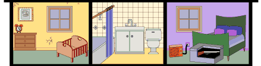

<html>
  <head>
    <title>Проверка существования свойства</title>
    <script type="text/javascript">
      var house = {
        roof: "<br/>",
	// thirdFloor: отсутствует.
        secondFloor: "<br/>",
        firstFloor: "<br/>",
        basement: "<br/>",
        address: "<p style='color:green'>UK. London. Muswell Hill. N10<hr/>"
      }
      // Строительство дома.
      document.write(house.roof);
      // ЕСЛИ: В обьекте house имеется планировка третьего этажа - thirdfloor,
      if ("thirdFloor" in house) {  // то: Строим третий этаж с планировкой - thirdfloor.
	document.write(house["thirdfloor"]);
      }
      else { // Иначе: Строим третий этаж с планировкой - secondFloor.
	document.write(house["secondFloor"]); // или house.secondFloor
      }
      document.write(house.secondFloor);
      document.write(house.firstFloor);
      document.write(house.basement);
      document.write(house.address);
    </script>
  </head>
  <body></body>
</html>
